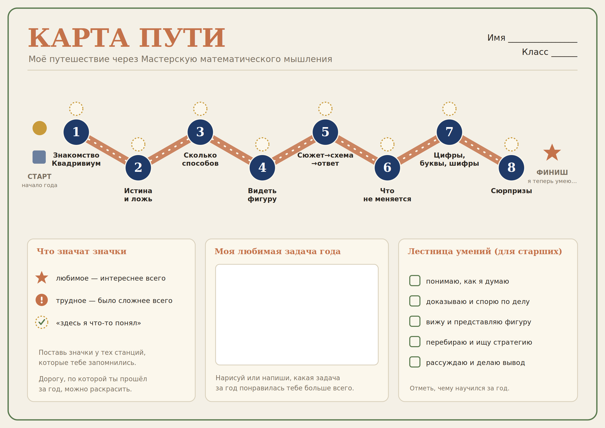

Мастерская математического мышления · конспект занятия
Рефлексивный конспект занятия · финал учебного года
Это всё, что нужно для занятия. Дальше можно просто читать конспект по строкам. Реплики, которые надо сказать детям, выделены синей плашкой «Скажите детям».
Цели занятия · развитие компонентов математического мышления
Зачем карта, а не просто беседа. Визуальный маршрут даёт младшим опору памяти — не «вспомни весь год» абстрактно, а «пройди пальцем по землям». Старшим карта служит каркасом для самооценки. Карту ребёнок уносит домой: это материальный след года и повод для разговора с семьёй.
По этой таблице легко вести вспоминание на этапе 1, даже если вы не вели курс весь год.
| № | Земля | Что мы там делали | Герой / сюжет |
|---|---|---|---|
| 1 | Знакомство | Познакомились с героями и правилами Мастерской | Риви, Квад, Треуголька, Звёздочка |
| 2 | Истина и ложь | Логика: рыцари и лжецы, «кто сказал правду» | Дракон и книга |
| 3 | Сколько способов | Комбинаторика: перебор, «сколькими способами» | Диплом волшебника |
| 4 | Видеть фигуру | Геометрия: формы, симметрия, разрезания | Матландия |
| 5 | Сюжет → схема → ответ | Нестандартная арифметика в сюжете | Магазин, Бегемот |
| 6 | Что не меняется | Стратегии и инварианты, игры | Спасение гномов |
| 7 | Цифры, буквы, шифры | Ребусы, шифры, закономерности | Дракон и книга |
| 8 | Сюрпризы | Многоступенчатые задачи, маршруты, графы | Спасение мира, Семь мостов |
Покажите галерею земель и героев (или список из восьми станций). Ведите детей по маршруту года по порядку, опираясь на таблицу выше: на каждой станции — короткий вопрос «А что мы делали здесь?».
«Целый год мы путешествовали по Мастерской математического мышления. Давайте вспомним наш путь. С чего мы начали? Кто помнит наших героев? А куда мы отправились потом?»
Раздайте карты и карандаши. Объясните значки — и дальше дети работают сами, а вы ходите между ними.
«Это карта вашего путешествия за год. У каждой станции есть кружок-флажок. Звёздочка — где было интереснее всего; восклицательный знак — где было труднее всего; галочка — где вы что-то поняли. Отмечать все станции не нужно — только те, что запомнились. А дорогу можно раскрасить.»
Переведите внимание с дороги на самого себя.
«А теперь посмотрите не на дорогу, а на себя. Чему вы научились за этот год?»
«У каждого на карте есть звёздочка — любимая задача года. Покажите её и расскажите: какая это была задача и почему именно она? А в рамке «Моя любимая задача» внизу карты нарисуйте или напишите её.»
Маркер для педагога. Если ребёнок выбирает задачу, в которой ошибся или которую не дорешал, — это признак высокого рефлексивного уровня (К5), а не «неудача». Поддержите такой выбор.
«Мы прошли весь путь. А какие приёмы — какие инструменты — вы нашли по дороге? Давайте соберём наши находки.»
Дети называют стратегии как инструменты в рюкзаке путешественника: инвариант, систематический перебор, раскраска, граф, метод предположения, «крайний случай». Записывайте их общим списком на доске — «Находки нашей группы за год». Младшие и средние этот этап пропускают.
«Развесим наши карты рядом — получится атлас нашей группы. Кто хочет показать свою карту и рассказать про неё?»
Завершите занятие — и год — сигнальной карточкой, как на каждом занятии курса.
Если занятие «не идёт». Малыши застревают на «ничего не помню» — не спрашивайте про весь год, ведите по одной земле: «Помнишь Бегемота? Что мы там делали?» Старшие иногда обесценивают («всё было легко») — попросите найти хотя бы один ❗ и объяснить, что именно там было непросто.
Выбирайте любые — на этапах 2–4, индивидуально или для общего круга.
Этапы и компоненты
| Этап | Деятельность | Компонент | Возрастная градация |
|---|---|---|---|
| 1. Возвращение | восстановление маршрута года | К1, К5 | узнавание → называние приёма |
| 2. Карта | личные пометки на маршруте | К5 | рисунок → подпись → «что умею» |
| 3. Лестница умений | самооценка умений | К5 | «я научился» → лестница К1–К5 |
| 4. Любимая задача | выбор и обоснование | К4, К5 | называет → объясняет почему |
| 5. Стратегии (3–4) | сбор приёмов года | К5 | — / список инструментов |
Тайминг (40–45 минут)
| Время | Этап | Что происходит |
|---|---|---|
| 0–5 мин | Возвращение | восстановление маршрута года по доске |
| 5–20 мин | Карта | дети заполняют свой шаблон значками |
| 20–28 мин | Лестница умений | самооценка: «что я теперь умею» |
| 28–35 мин | Любимая задача | выбор ★ и устное обоснование |
| 35–40 мин | Стратегии (3–4 кл.) | сбор приёмов года на доске |
| 40–45 мин | Галерея | показ карт, итоговая сигнальная карточка |
Связь с диагностикой. Карта пути + лестница умений + устный выбор любимой задачи дают качественный срез К5 на конец года и подводят к письменному эссе «Моя любимая задача» и итоговой сигнальной карточке. Занятие удобно ставить сразу после итоговой ДТМ (Форма Б).
Печатайте по одному листу на ребёнка. Для печати в полном качестве используйте отдельный файл «КАРТА_ПУТИ_шаблон_печать.pdf» (A3, можно A4) — он доступен на странице конспекта отдельной кнопкой.
